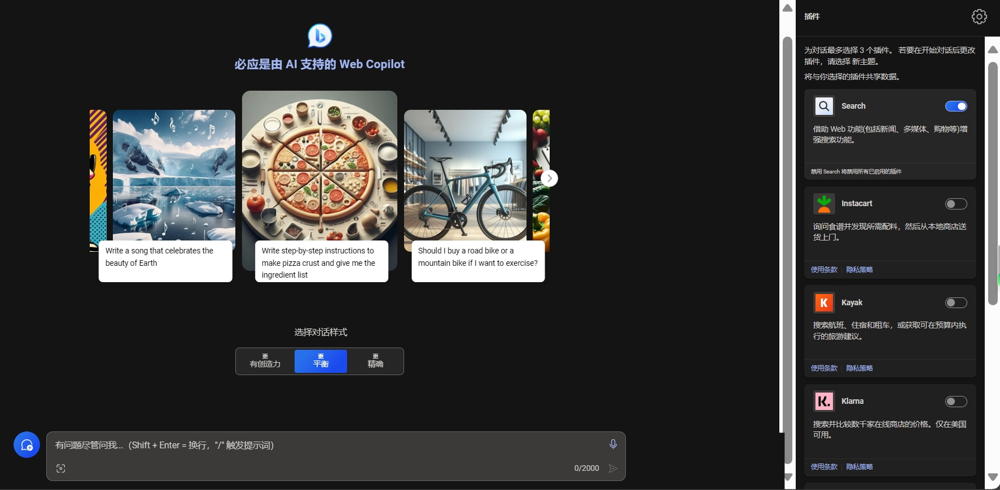
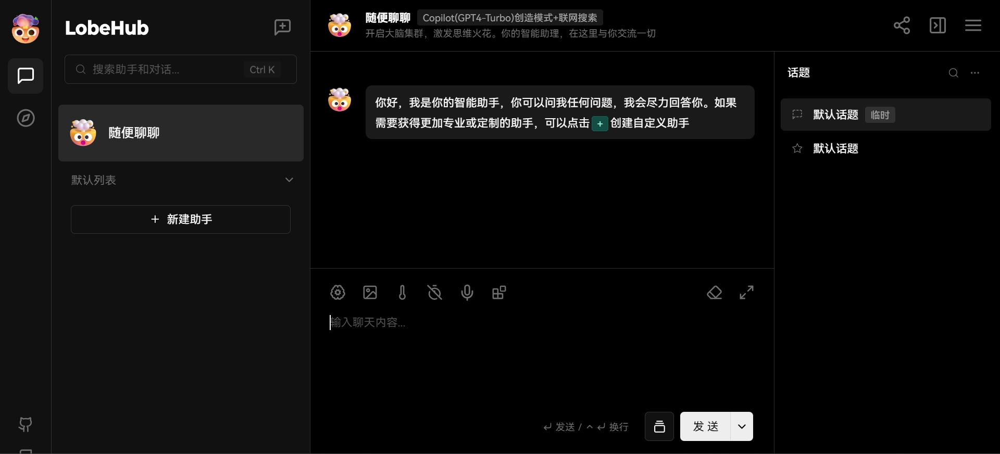

-
站点v4：点击访问
-
站点v5-new(可用)：点击访问
-
站点v5-old(恢复使用,原记录还在,可随时导出)点击访问
站点v1版是纯粹的微软copilot(原bing)镜像站 站点v1的语音交互功能请使用PC端或者移动端的Edge浏览器/Google Chrome浏览器
站点v3是API站点,接入OpenAI gpt-3.5-turbo、微软copilot(g4t)/copilot(g4t)-vision、谷歌Gemini-Pro/Gemini-Pro-vision、讯飞星火v3.5/v3.1/v2.1、通义千问pro/plus/maX,智谱清言glm-4/glm-3.5-turbo,规模最小,浏览器适配程度最高

站点v4是是一个基于 Google Gemini模型的网页客户端，UI界面与ChatGPT类似，操作逻辑同 ChatGPT一致，同时支持在聊天中上传图片，应用会自动调用 Gemini-Pro-Vision 模型进行识图 以及直接在浏览器运行AI编写的python脚本

站点v5-new是模型的集合站，可用OpenAI gpt-3.5-turbo,微软copilot(gpt-4-turbo),Google模型包含Gemini-pro/Gemini-pro-vision模型,智谱AI模型包含GLM-4/GLM-4-vision/GLM-3-turbo, 讯飞星火模型包含SparkDesk-v3.5/SparkDesk-v3.1/SparkDesk-v2.1,通义千问模型包含qwen-pro/qwen-plus/qwen-max
站点v5有点复杂，虽然也是接入bing，但是多了很多东西，并且添加了例如语音交互的功能,以及一堆插件
站点v5语音功能使用须知：
第一步：
Settings => Speech Services => Speech Recognition Settings=>Speech-to-Text Service=>将openai改成Browser
第二步：
Settings => Default Agent=> Speech Services=>Text-to-Speech Service=>将openai改成Edge speech